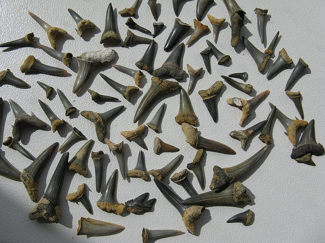
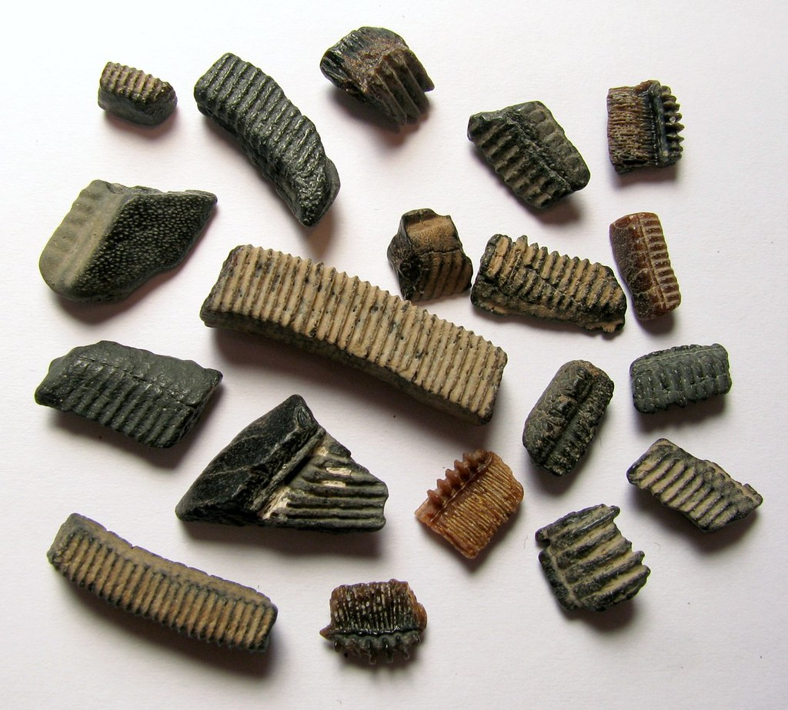
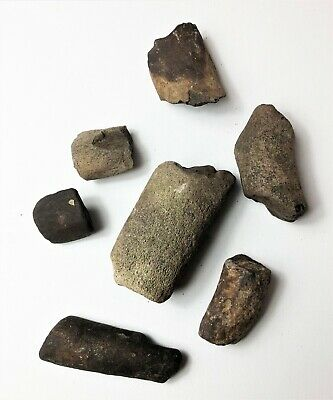
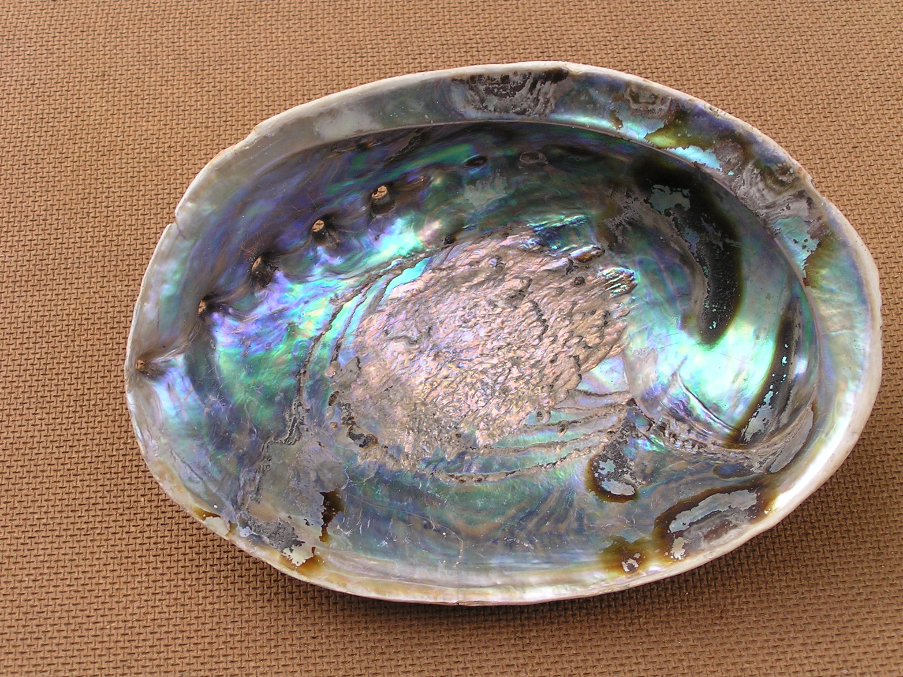
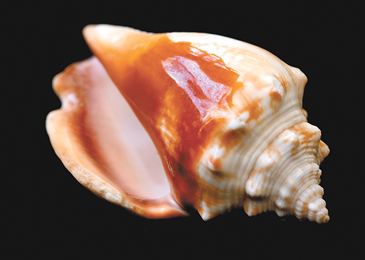

Paleontology in Florida refers to paleontological research occurring within or conducted by people from the U.S. state of Florida. Florida has a very rich fossil record spanning from the Eocene to recent times. Florida fossils are often very well preserved. The oldest known fossils in Florida date back to the Eocene. At this time Florida was covered in a sea home to a variety of marine invertebrates and the primitive whales Basilosaurus and Pontogenous. During the later Miocene Florida was exposed as dry land again due to geologic uplift and mountain building. In the Florida Keys, however, coral reefs were forming. The marine environments of Pliocene Florida were home to creatures like dugongs, porpoises, sharks, and whales. On land, camels, dogs, horses, relatives of modern elephants, saber toothed cats, and tapirs inhabited the state. The period of time best documented in the fossil record of Florida is the Pleistocene epoch. In fact, Florida is the best source of Pleistocene mammals in the world. Among them were short-faced bears, saber-toothed cats, glyptodonts, mammoths, mastodons, giant ground sloths, and wolves.
  A seashell or sea shell, also known simply as a shell, is a hard, protective outer layer usually created by an animal that lives in the sea. The shell is part of the body of the animal. Empty seashells are often found washed up on beaches by beachcombers. The shells are empty because the animal has died and the soft parts have decomposed or been eaten by another animal. A seashell is usually the exoskeleton of an invertebrate (an animal without a backbone), and is typically composed of calcium carbonate or chitin. Most shells that are found on beaches are the shells of marine mollusks, partly because these shells are usually made of calcium carbonate, and endure better than shells made of chitin.
 